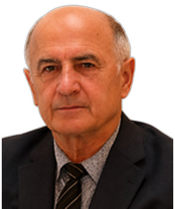

Profile
Vahid Gadimov is a professor in the Department of Higher Mathematics and Programming at MIREA – Russian Technological University, and an acting professor at the Russian University of Transport. Received a 1981 Promotion A (Dr. rer. nat.) on contact problems of plastic flow in a thin metal layer, and a 2000 Promotion B (habilitation / Doctor of Science) on nonstationary contact problems of flow in a thin plastic layer. He was a senior researcher and professor at the Institute of Mathematics and Mechanics in Baku from 1980 to 1997. Published more than 200 research works and more than 45 textbooks, including 16 key works.
Work experience
MIREA – Russian Technological University, Moscow, Russian Federation
Professor
- Department of Higher Mathematics and Programming
Russian University of Transport (RUT-MIIT), Moscow, Russian Federation
Acting professor
- Department of Higher Mathematics and Natural Sciences
Moscow State University of Technology STANKIN, Moscow, Russian Federation
Scientific adviser
Moscow State University of Humanities and Economics, Moscow, Russian Federation
2014–2020Senior researcher and professor
Moscow State University of Mechanical Engineering (MAMI), Moscow, Russian Federation
1997–2014Professor and project lead
- Department of Mathematics
Mechanical Engineering Research Institute, Russian Academy of Sciences, Moscow
1997–2006Senior researcher and professor
Institute of Mathematics and Mechanics, Azerbaijan Academy of Sciences, Baku, Azerbaijan
1980–1997Senior researcher and professor
Education
DSc
2000Habilitation. The nonstationary contact problems of flow in a thin plastic layer
Moscow
Dr. rer. nat.
1981Some contact problems of plastic flow in a thin layer of metal. Promotion A
Lomonosov Moscow State University. Postgraduate study 1976–1979, Faculty of Mechanics and Mathematics
Grants & projects
- 2011–2012 — Some problems of the mathematical theory of plasticity as applied to the mechanics of pressure treatment — Ministry of Education — Responsible executor
- 2006–2011 — Mathematical models of some modern problems in pressure-processing technology — RFBR — Lead executor. MAMI with the Faculty of Mechanics and Mathematics, Moscow State University
Teaching
- Differential and integral calculus; linear algebra; vector analysis; analytical geometry; ordinary differential equations; equations of mathematical physics; tensor analysis; linear programming — MIREA
Publications
Books and textbooks
1. Kadymov, V. Mathematical modelling of contact problems of plastic flow. Palmarium Academic Publishing, 2016.
Book chapters
1. Kadymov, V.; Yanovskaya, E. A. Some applications to the design of partial solutions for nonlinear equations of mathematical physics. In: Nonlinearity: Problems, Solutions and Applications. Nova Science Publishers, New York, 2017, vol. 1, pp. 171–199.
Peer-reviewed journal articles
1. Kadymov, V.; Sosenushkin, E. N.; Yanovskaya, E. A. Contact problems of plastic flow in a thin layer: theory, analysis of solutions and their applications. Problems of Mechanical Engineering and Machine Reliability, 2022, no. 3(22), pp. 18–28.
2. Kadymov, V.; Sosenushkin, E. N.; Yanovskaya, E. A. Some exact solutions of the evolutionary equation of the spreading of a plastic layer on a plane. Bulletin of Moscow State University, series 1, Mathematics and Mechanics, 2016, no. 3.
3. Kadymov, V.; Sosenushkin, E. N.; Yanovskaya, E. A., et al. The parameters of the stress state in the operations of plastic deformation. Key Engineering Materials, 2016, vol. 684, pp. 57–66.
4. Kadymov, V. On one mathematical model of the flow in a thin plastic layer. Mathematical Methods in the Applied Sciences, 2015, vol. 38, issue 16.
5. Kadymov, V.; Belov, N. A. Analysis of the boundary-value problem of the flow of a plastic layer between approaching rigid plates. Izvestiya of the Russian Academy of Sciences, 2011, no. 1.
6. Kadymov, V.; Kiiko, I. A. Generalization of L. Prandtl’s problem of plastic-layer compression. Bulletin of Moscow State University, 2003.
7. Kadymov, V. Mathematical modelling of contact problems of plastic flow. Nonlinear Analysis: Theory and Applications, 1997, vol. 30, no. 8.
8. Kadymov, V. Contact interactions of solid and plastically deformable bodies, taking into account the active influence of the intermediate medium. Technische Mechanik, Germany, 1989, vol. 10, no. 3.
Conference papers and abstracts
1. Kadymov, V.; Sosenushkin, E.; Yanovskaya, E. Contact problem of complex loading of a plastic strip. 2nd International Conference ITTA-2024, Baku, 20–22 April 2024, p. 84.
2. Kadymov, V.; Sosenushkin, E.; Yanovskaya, E. Some exact solutions of the nonlinear evolutionary equation of the spreading of a plastic layer on a plane. E3S Web of Conferences, 2023, vol. 458.
3. Kadymov, V. Contact problems of plastic flow in a thin layer: theory, boundary-value problems, solutions and applications. International conference Nonlinear phenomena in biology, ecology, physics and mechanics, UNEC, Baku, 22–26 October 2023, pp. 17–18.
4. Kadymov, V.; Mironov, B. Plastic flow in a thin layer: analogy with the problem of torsion of rods. II Scientific Conference MMSA-2021, vol. 2497, no. 1, 4 May 2023.
5. Kadymov, V.; Gordon, E. Research of design problems of technological processes for stamping multilayer structural elements. 8th International Conference on Control and Optimization with Industrial Applications (COIA-2022), Baku, 24–26 August 2022, vol. 1.
6. Kadymov, V.; Sosenushkin, E. N. Plastic flow in a thin layer: new formulation of the boundary-value problem and its solution. EPJ Web of Conferences, 2019, vol. 224. IV International Conference MNPS-2019.
Invited talks and conference participation
- 1995, 1997 — TU Hamburg-Harburg, Germany — Invited lectures and joint research
- 1997 — TU Karlsruhe, Germany — Invited lectures and joint research
- 1997, 2001 — TU Berlin, Germany — Invited lectures and joint research